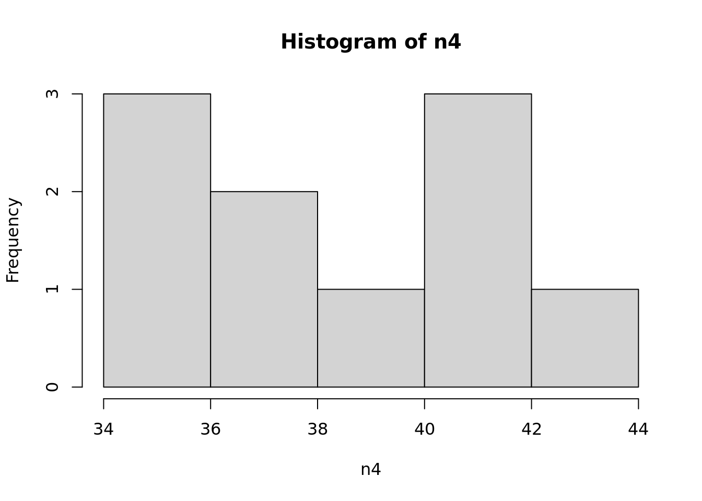
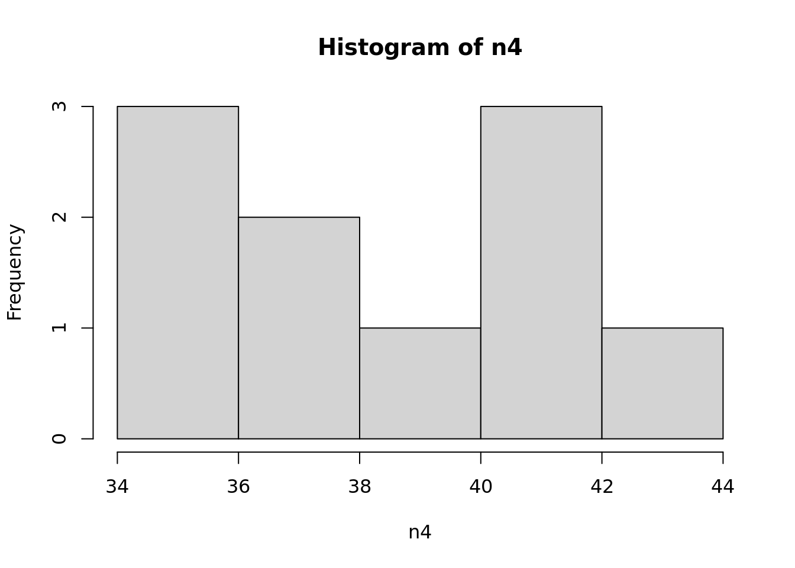
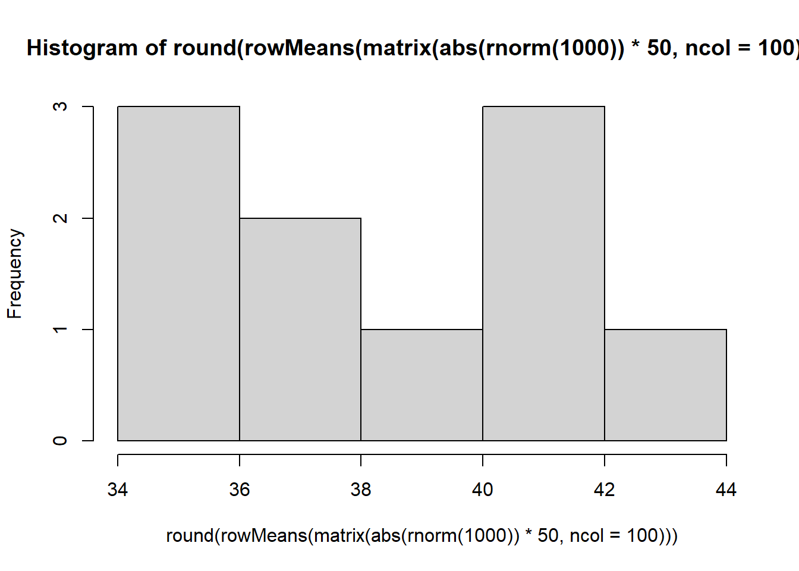
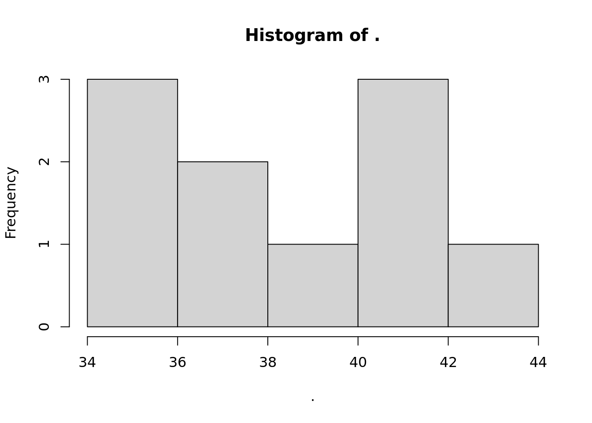

# 设置随机种子
set.seed(101)
# 开始
n1<-rnorm(1000) # 第1步
n2<-abs(n1)*50 # 第2步
n3<-matrix(n2,ncol = 100) # 第3步
n4<-round(rowMeans(n3)) # 第4步
hist(n4) # 第5步
为什么R要这样写代码？%>%（pip operator）到底什么意思？ 参考R语言高效的管道操作magrittr | 粉丝日志 (fens.me)
%>%看我代码中频繁出现， 这个操作符只有在加载magrittr后才能用。
我们先看一个简单的程序
# 设置随机种子
set.seed(101)
# 开始
n1<-rnorm(1000) # 第1步
n2<-abs(n1)*50 # 第2步
n3<-matrix(n2,ncol = 100) # 第3步
n4<-round(rowMeans(n3)) # 第4步
hist(n4) # 第5步
上面的代码写法是，每一行实现一个条件，但中间多了不少的临时变量。这无疑额外创建了很多没用的变量，对计算机来讲，就是垃圾变量占用内存，对于设计者来讲，看起来眼花。
想一想，还有没有其他写法？
我们看看下面这个，这是不同的嵌套，一层一层，将5步，一句语法实现。
set.seed(101)
hist(round(rowMeans(matrix(abs(rnorm(1000))*50,ncol=100))))
结果是一样。但这个写法，会让人觉得有点崩溃，一层套一层，稍有不慎，就少个括号，并且读起来半天才知道是做什么的。
为了让代码读起来更像人话，我们就用到%>%，避免了创建一些无意义的中间变量，又看起来步骤分明。从里到外，一步一步，就像管道一样。
# 加载magrittr
library(magrittr)
# 设置随机种子
set.seed(101)
# 开始
rnorm(1000) %>%
abs %>% `*` (50) %>%
matrix(ncol=100) %>%
rowMeans %>% round %>%
hist
看起来好爽。每一步都很清晰。
magrittr包，主要定义了4个管道操作符，分另是%>%, %T>%, %$% 和 %<>%。其中，操作符%>%是最常用的，其他3个操作符，与%>%类似，在特殊的使用场景会起到更好的作用。请大家自学
Quarto 或 R Markdown 是学术写作的未来。因为他们既可以使用markdown语法，又可以运行代码，输出结果。R Markdown曾被认为是可以运行代码的Markdown。
你可以试试。
plot(cars) # 可以运行代码，输出结果
和
plot(cars) # 只是代码，并不能运行，肯定也不能输出结果这两种语句有什么不同。
想了解更多，可以看看我在B站具体的解释。
https://www.bilibili.com/video/BV1aP411A7TV/
如何创建Quarto和R Markdown文件
https://www.bilibili.com/video/BV14m4y1c7wM/
R的默认工作目录在所有操作系统里一般都是家目录里。可以先查看一下
getwd()[1] "/home/rsliang/Demo"“/home/rsliang/Demo”，这是我的电脑上默认的工作目录。在这个目录下，你放了任何文件，都可以直接使用相对路径
比如这时候你可以直接用相对路径调用数据集”dataset/***.csv”。
read.csv("dataset/stroke.csv") %>%
head()假设我的工作目录不是这里呢？比如我把工作目录换了，因为我这个目录下面没有dataset文件夹，更没有stroke.csv文件，所以自然会报错，无法执行。
setwd("/home/rsliang/") #若设定工作目录为这个
# read.csv("dataset/stroke.csv") 如果运行这条语句会报错另外还有个办法，也比较有效，那就是打开R的项目（project）文件，后缀名为.Rproj的文件，打开以后，就默认这个所在的文件夹就是根目录，可以直接在右侧files选项卡，会显示当前项目的内容。